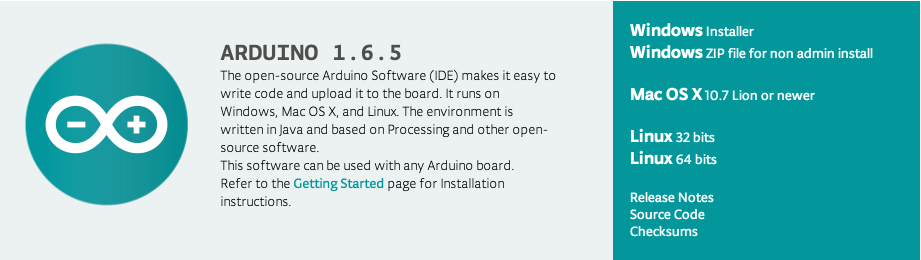
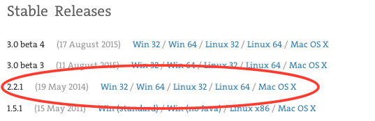

Download Arduino
Go to arduino.cc and download Arduino. DO NOT download the arduino IDE from arduino.org. 
Download Processing
Go to processing.org and download Processing v2.2.1 (the last non-beta release). DO NOT download any of the versions labeled beta. 
Download Firmata for Processing
Download the Firmata library for Processing (direct download link).
Daniel Shiffman
IS THE BEST PERSON TO LEARN THESE THINGS FROM http://shiffman.net/.
Blink

Blink 2

Button

Potentiometer

PIR Sensor